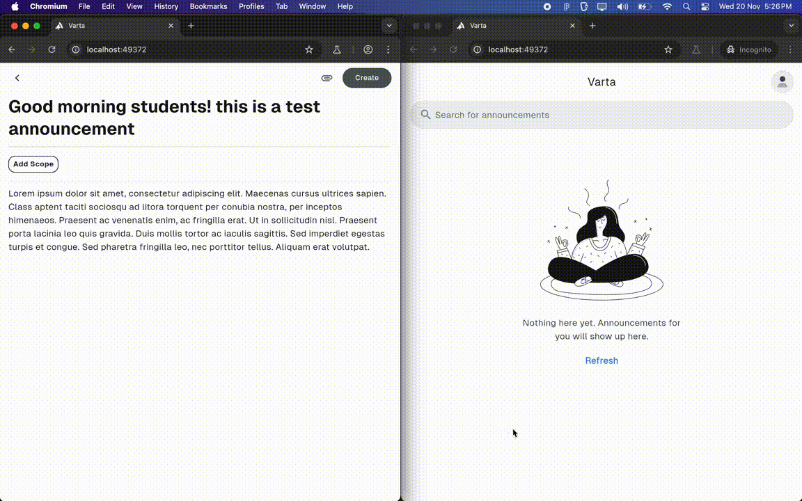
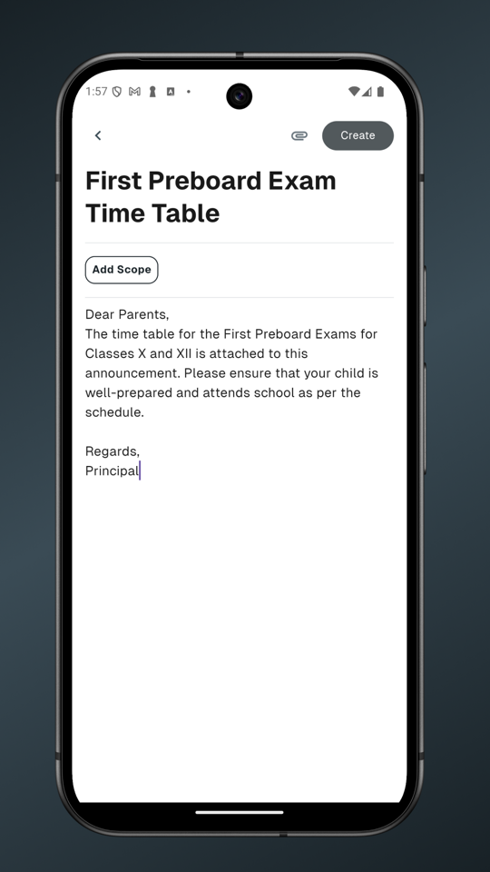
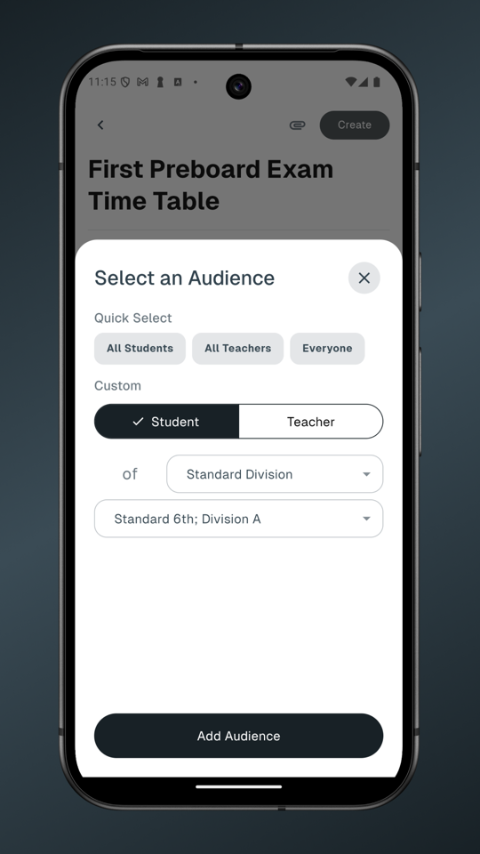
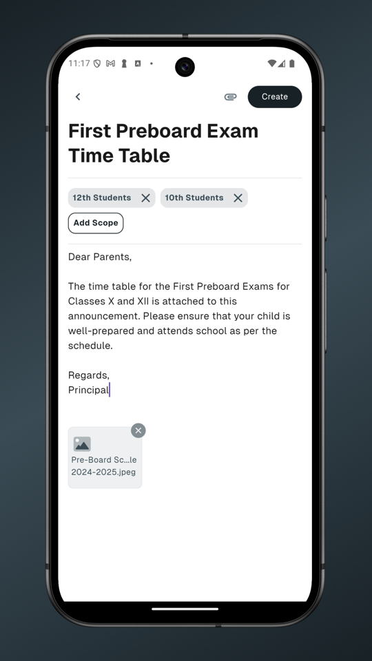
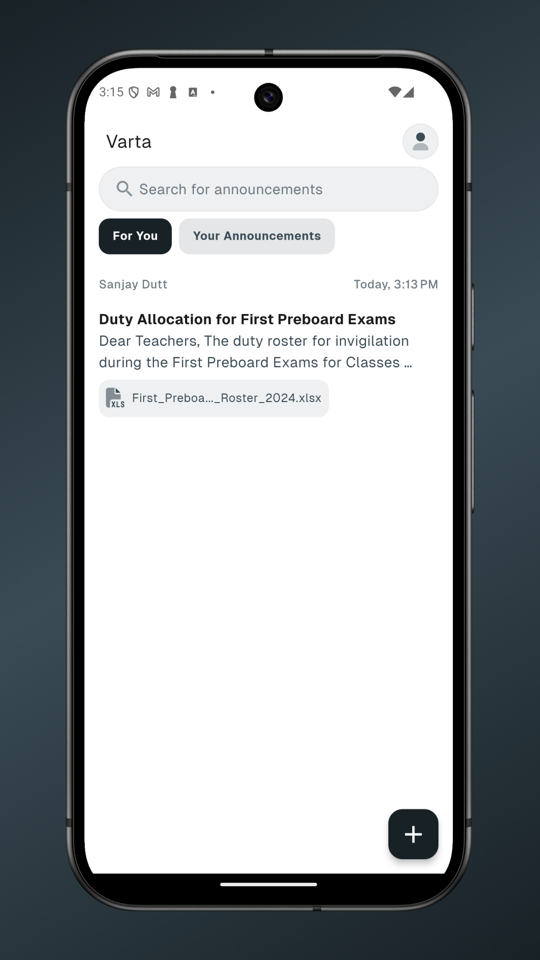
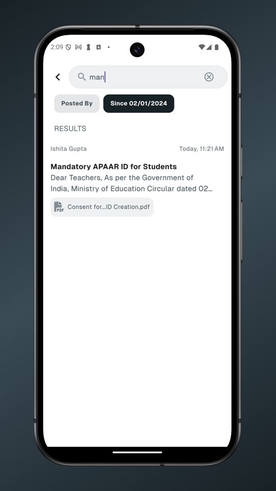

Building an app for my school
Picture this: it's a fine Saturday morning, it's an off, so the school is unusually serene. Suddenly a 12th grader shows up, starts roaming about the 4th floor and asking the teachers around if it is indeed an off today, because he wasn't informed of this happening.
Well, that was exactly the position I found myself in. After maybe 10 mins of prancing about and eventually finding my class teacher, I came to know it was indeed an off for everyone, and I had no idea about it. After receiving a nice scolding from her for "not checking the school WhatsApp group for announcements", it apparently turned out that I in fact hadn't received any updates on my class WhatsApp group. This was because there had been exactly four distinct class groups. Why, you may ask? Well, I had no clue either.
That is when it hit me; this is a PROBLEM. If I as a student can face these kinds of communication lapses, I really hate to imagine what happens on the teachers' end.
The problem
So to me the problem seemed to be that school communications are divided across several small groups. These groups may range from "12th Official Group" to "12C Computer Science Group". Not only does this cause important announcements to be lost, but it is simply annoying to constantly have your phone buzzing with irrelevant chatter.
The solution
The solution to this? An announcements app, where announcements find YOU, not the other way around. Essentially with each announcement you can specify who exactly it is for, "12th Standard Students", "Geography Teachers", "Class Teacher of 12C", and it will only be visible and notified to them.
I went ahead and walked into the room of my principal, and asked her to give me 6 months to solve this exact problem. With her support and blessings, I started building.
Starting too big
I frankly vastly underestimated the scope of the project. Instead of thinking in terms of an MVP, I began sketching out ideas in my notebook for all the features and screens I wanted in the app: an interactive attendance tracker, an exam management solution and what not.
For the first 4 months, the development was all over the place. I picked Flutter because it was cross-platform (and hey, an excuse to learn a new language!), along with Python and Django on the back-end, but I was still figuring out how to even build an app (coming from a web background, the app UX patterns were completely new to me). Eventually, I realised that I needed an MVP.
The MVP
4 months had passed since I had promised the app. The app went from being "unnamed project", to "campuspilot", to now, "Varta". Varta is the Sanskrit word that roughly means to converse, and I knew then that I was solving a VERY specific problem: I was trying to fix broken and scattered communications across my school.
I had to take a step back, and spend some time in the real world, to map out the kinds of communications that were transmitted over the VA (loudspeaker) system of my school.
And now, for the sizzle reel...

Creating, updating and deleting an announcement.





Running it like a real product
Once the MVP was done, I had to actually figure out how to run it, which meant thinking about costs, infrastructure, and the unglamorous reality of handling 980 people's data: 900 students across 6th-12th and 80 staff members.
I went back to the WhatsApp groups I was trying to replace and did something I hadn't thought to do earlier: I actually analysed them. I mapped announcement frequency across time windows, found that roughly 24 go out per week, about 15% have attachments averaging 5MB, and almost all of it happens between 6AM and 1PM.
That data shaped everything: the polling frequency, the S3 projections, the instance sizing. Total cost came out to ₹235 per user per year. I put this in a proposal and walked the principal through it, which was a new experience, explaining EC2 instance specs to someone who runs a school.
What I got wrong
The first four months were nearly wasted. I was building an attendance tracker, an exam manager, a scheduling system, none of which I had promised and none of which the school asked for. The MVP should have been month one, not month five.
I also completely underestimated onboarding. Shipping the app was the easy part; getting teachers who were skeptical to actually use it was a different problem entirely, one I hadn't designed for.
Where it stands
The school is on it. Code is on GitHub.